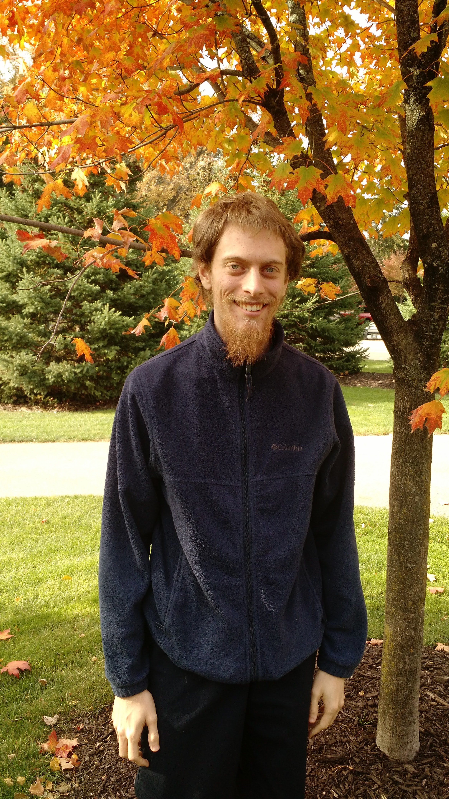
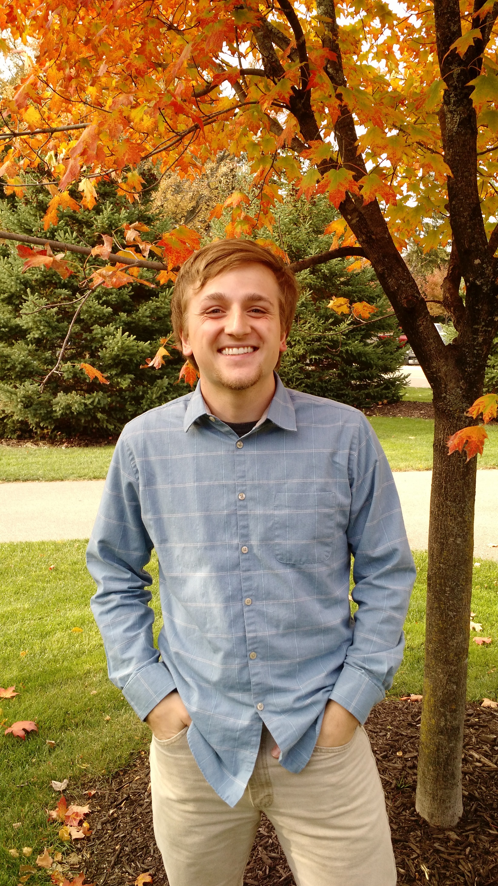
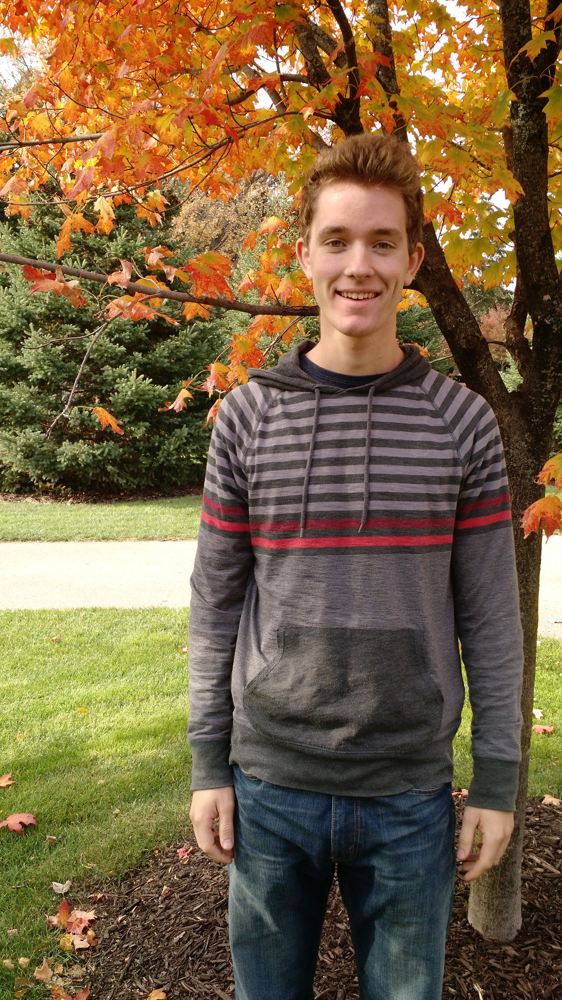
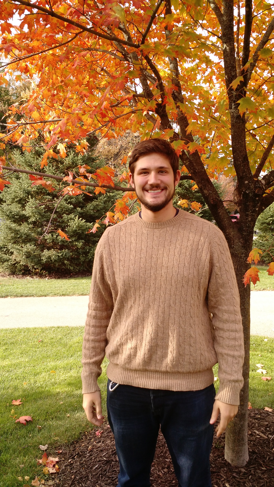

About Team 14
A brief description of our team

A brief description of our team

Daniel Dehoog is senior engineering student in the Electrical and Computer Engineering concentration of the Calvin College Engineering program, and is minoring in computer science. He has worked in the IT industry as a Helpdesk technician and has interned multiple times at Dematic doing programming and setting up PLCs. He enjoys reading and playing video games as a hobby. His section of the project includes the setting up of the hub that acts as an interface between the sensors and the server

TJ DeVries is senior engineering student in the Electrical and Computer Engineering concentration of the Calvin College Engineering program, and is minoring in computer science. He has worked on one electrical engineering research project at Carnegie Mellon University, one Mathematics Research Project and Calvin College and has worked for DornerWorks more recently.

Paul Griffioen is a senior engineering student in the Electrical and Computer Engineering concentration of the Calvin College Engineering program, and he is minoring in computer science. He has worked on four different engineering research projects at two different universities under five different professors. He has also published a paper in IEEE and enjoys doing musical and athletic activities in his spare time

Ryan Siekman is senior engineering student in the Electrical and Computer Engineering concentration of the Calvin College Engineering program, and is minoring in computer science and business. He has worked for Steelcase, in both the New Business Innovation department and in the Global Codes & Approvals department